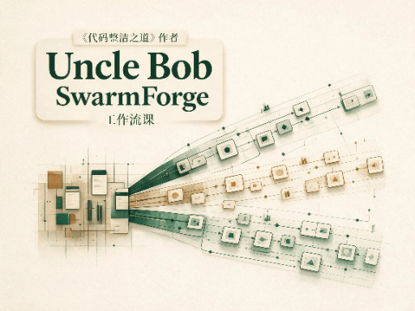

课程首页
Uncle Bob SwarmForge 工作流课
把 unclebob/swarm-forge 的 swarmforge/ 读成一套可交接的多角色流水线。先分清 main 底座和 pack 工作流，再把 two / four / six 三套 pack 整台走完。

课程首页
把 unclebob/swarm-forge 的 swarmforge/ 读成一套可交接的多角色流水线。先分清 main 底座和 pack 工作流，再把 two / four / six 三套 pack 整台走完。
